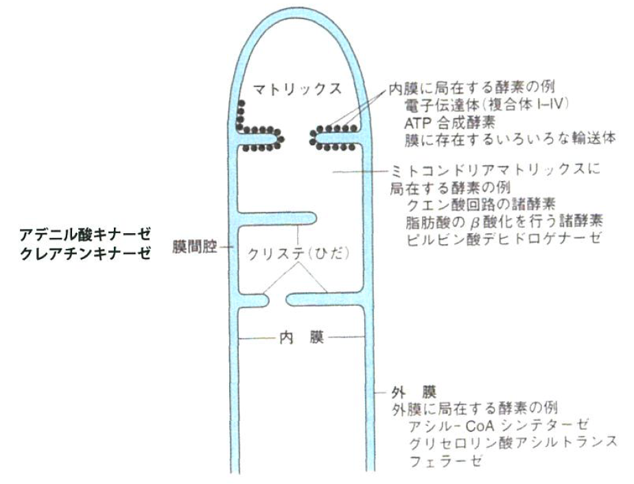
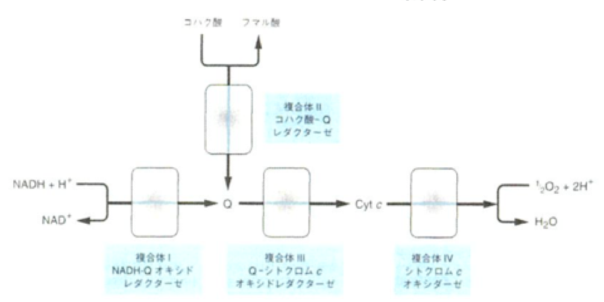

<!DOCTYPE html>
<html lang="ja">
    <head>
        <meta charset="utf-8">
        <meta http-equiv="X-UA-Compatible" content="IE=edge">
        <meta name="viewport" content="width=device-width, initial-scale=1.0">
        <meta name="author" content="Shuto" />

        <meta property="og:type" content="article" />
        <meta name="twitter:card" content="summary">

<meta name="keywords" content="3S, 生体物質化学Ⅱ, 生体物質化学Ⅱ, " />
<meta property="og:image" content="https://iwasakishuto.github.io/study/notes/theme/img/default_image.png"/>

<meta property="og:title" content="生体物質化学Ⅱ 第9回 "/>
<meta property="og:url" content="https://iwasakishuto.github.io/study/notes/生体物質化学Ⅱ-9.html" />
<meta property="og:description" content="ATPの役割・生体酸化・呼吸鎖と酸化的リン酸化" />
<meta property="og:site_name" content="My Notes" />
<meta property="og:article:author" content="Shuto" />
<meta property="og:article:published_time" content="2019-06-21T00:00:00+09:00" />
<meta property="og:article:modified_time" content="2019-06-21T00:00:00+09:00" />
<meta name="twitter:title" content="生体物質化学Ⅱ 第9回 ">
<meta name="twitter:description" content="ATPの役割・生体酸化・呼吸鎖と酸化的リン酸化">

        <title>生体物質化学Ⅱ 第9回  · My Notes
</title>
        <link href="//netdna.bootstrapcdn.com/twitter-bootstrap/2.3.2/css/bootstrap-combined.min.css" rel="stylesheet">
        <link href="//netdna.bootstrapcdn.com/font-awesome/4.7.0/css/font-awesome.css" rel="stylesheet">
        <link rel="stylesheet" type="text/css" href="https://iwasakishuto.github.io/study/notes/theme/css/pygments.css" media="screen">
        <link rel="stylesheet" type="text/css" href="https://iwasakishuto.github.io/study/notes/theme/tipuesearch/tipuesearch.css" media="screen">
        <link rel="stylesheet" type="text/css" href="https://iwasakishuto.github.io/study/notes/theme/css/elegant.css" media="screen">
        <link rel="stylesheet" type="text/css" href="https://iwasakishuto.github.io/study/notes/theme/css/admonition.css" media="screen">
        <!---->
        <link rel="apple-touch-icon" sizes="152x152" href="https://iwasakishuto.github.io/study/notes/theme/img/icon/apple-touch-icon-152x152.png" type="image/png" />


        <!-- Use fontawesome Icon -->
        <link rel="stylesheet" href="https://use.fontawesome.com/releases/v5.7.0/css/all.css" integrity="sha384-lZN37f5QGtY3VHgisS14W3ExzMWZxybE1SJSEsQp9S+oqd12jhcu+A56Ebc1zFSJ" crossorigin="anonymous">
        <!-- Syntax highlight -->
        <link rel="stylesheet" href="https://cdnjs.cloudflare.com/ajax/libs/highlight.js/8.6/styles/github.min.css">
        <!-- Custom CSS -->
        <link rel="stylesheet" type="text/css" href="https://iwasakishuto.github.io/study/notes/theme/css/custom.css" media="screen">
        <script src="https://cdnjs.cloudflare.com/ajax/libs/highlight.js/8.6/highlight.min.js"></script>
        <script>hljs.initHighlightingOnLoad();</script>
        <!-- LaTex -->
        <!-- Github env -->
        <!--<script type="text/javascript" async src="//cdn.mathjax.org/mathjax/latest/MathJax.js?config=TeX-MML-AM_CHTML"></script>-->
        <script async src="https://cdnjs.cloudflare.com/ajax/libs/mathjax/2.7.0/MathJax.js?config=TeX-AMS_CHTML"></script>
        <script type="text/x-mathjax-config">
        	MathJax.Hub.Config({
        		tex2jax: {
        			inlineMath: [ ['$','$'], ["\\(","\\)"] ],
        			displayMath: [ ['$$','$$'], ["\\[","\\]"] ]
        		}
        	});
        </script>
        <!-- Mermaid -->
        <script src="https://unpkg.com/mermaid/dist/mermaid.min.js" charset="UTF-8"></script>
        <script>
          mermaid.initialize({
            startOnLoad:true
          });
        </script>
    </head>
    <body>
        <div id="content-sans-footer">
        <div class="navbar navbar-static-top">
            <div class="navbar-inner">
                <div class="container-fluid">
                    <a class="btn btn-navbar" data-toggle="collapse" data-target=".nav-collapse">
                        <span class="icon-bar"></span>
                        <span class="icon-bar"></span>
                        <span class="icon-bar"></span>
                    </a>
                    <a class="brand" href="https://iwasakishuto.github.io/study/notes"><span class=site-name style="color: #80273F;"><i class="fa fa-book"></i> My Notes</span></a>
                    <!--
                    <a class="brand" href="https://iwasakishuto.github.io/study/notes/"><span class=site-name style="margin-left:auto; margin-right:auto;"><i class="fas fa-book-reader"></i>My Notes</span></a>
                    -->
                    <div class="nav-collapse collapse">
                        <ul class="nav pull-right top-menu">
                            <li ><a href="https://iwasakishuto.github.io/"><i class="fas fa-home"></i>Portfolio Top</a></li>
                            <li ><a href="https://iwasakishuto.github.io/study/notes/categories"><i class="fa fa-list-alt"></i> Categories</a></li>
                            <li ><a href="https://iwasakishuto.github.io/study/notes/tags"><i class="fa fa-tags"></i> Tags</a></li>
                            <li ><a href="https://iwasakishuto.github.io/study/notes/archives"><i class="fa fa-folder-open"></i> Archives</a></li>
                            <li><form class="navbar-search" action="https://iwasakishuto.github.io/study/notes/search.html" onsubmit="return validateForm(this.elements['q'].value);"> <input type="text" class="search-query" placeholder="Search" name="q" id="tipue_search_input"></form></li>
                        </ul>
                    </div>
                </div>
            </div>
        </div>
        <div class="container-fluid">
            <div class="row-fluid">
                <div class="span1"></div>
                <div class="span10">
<article itemscope>
<div class="row-fluid">
    <header class="page-header span10 offset2">
    <h1><a href="https://iwasakishuto.github.io/study/notes/生体物質化学Ⅱ-9.html"> 生体物質化学Ⅱ 第9回  </a></h1>
    </header>
</div>

<div class="row-fluid">
        <div class="span8 offset2 article-content">

            
            <h1>第9回 2019/6/21</h1>
<ul>
<li>講師：<a href="https://www.u-tokyo.ac.jp/focus/ja/people/people100065.html">谷内江 望</a></li>
<li>教科書：<a href="https://www.amazon.co.jp/%E3%82%A4%E3%83%A9%E3%82%B9%E3%83%88%E3%83%AC%E3%82%A4%E3%83%86%E3%83%83%E3%83%89-%E3%83%8F%E3%83%BC%E3%83%91%E3%83%BC%E3%83%BB%E7%94%9F%E5%8C%96%E5%AD%A6-%E5%8E%9F%E6%9B%B829%E7%89%88-Lange-Textbook/dp/4621087282/ref=sr_1_7?adgrpid=52953503186&amp;gclid=CjwKCAjw3azoBRAXEiwA-_64OqNC1sN4WoKjSFezwZLHBI8xq-xIKeNXlOxtCw0WcQiG2lUSnKfkdBoCoYYQAvD_BwE&amp;hvadid=338544372676&amp;hvdev=c&amp;hvlocphy=1009279&amp;hvnetw=g&amp;hvpos=1t1&amp;hvqmt=b&amp;hvrand=11779002541236450391&amp;hvtargid=kwd-337672409412&amp;hydadcr=27486_11564611&amp;jp-ad-ap=0&amp;keywords=%E7%94%9F%E5%8C%96%E5%AD%A6+%E3%82%A4%E3%83%A9%E3%82%B9%E3%83%88%E3%83%AC%E3%82%A4%E3%83%86%E3%83%83%E3%83%89&amp;qid=1561080889&amp;s=gateway&amp;sr=8-7">イラストレイテッド ハーパー・生化学</a></li>
<li>教科書：<a href="https://www.amazon.co.jp/%E3%83%B4%E3%82%A9%E3%83%BC%E3%83%88%E7%94%9F%E5%8C%96%E5%AD%A6%E3%80%88%E4%B8%8A%E3%80%89-Donald-Voet/dp/4807908073/ref=sr_1_4?__mk_ja_JP=%E3%82%AB%E3%82%BF%E3%82%AB%E3%83%8A&amp;keywords=%E3%83%B4%E3%82%A9%E3%83%BC%E3%81%A8%E7%94%9F%E5%8C%96%E5%AD%A6&amp;qid=1561080923&amp;s=gateway&amp;sr=8-4">ヴォート生化学</a></li>
</ul>
<h2>講義日程</h2>
<table>
<thead>
<tr>
<th align="left">日付</th>
<th align="left">内容</th>
<th align="left">（代謝から少し離れた）解析技術</th>
</tr>
</thead>
<tbody>
<tr>
<td align="left">6/21</td>
<td align="left">ATPの役割<br>生体酸化<br>呼吸鎖と酸化的リン酸化</td>
<td align="left">インタラクトーム解析</td>
</tr>
<tr>
<td align="left">7/5</td>
<td align="left">代謝の概観と代謝エネルギー源の供給<br>クエン酸回路：アセチル-CoAの異化代謝<br>解糖とピルビン酸酸化</td>
<td align="left">ゲノム編集の最先端技術</td>
</tr>
<tr>
<td align="left">7/12</td>
<td align="left">グリコーゲン代謝<br>糖新生と血糖の調節</td>
<td align="left">ゲノム編集と細胞系譜解析</td>
</tr>
<tr>
<td align="left">7/19</td>
<td align="left">脂肪酸の酸化：ケトン体生成</td>
<td align="left">複雑な細胞集団のダイナミクス解析</td>
</tr>
</tbody>
</table>
<h2>講義の進め方</h2>
<ol>
<li>前回の小テスト解説</li>
<li>代謝の基礎について講義</li>
<li>代謝およびそれに強く結びついた生命科学現象を解析する最先端技術あるいは現在の代謝研究の弱点を解決する最先端技術について紹介</li>
<li>小テスト（最終試験には小テストとほぼ同じ問題を<b>半分以上<font color="red">(7割)</font></b>出題する）</li>
</ol>
<div style="border: solid 1.0px #000000;padding: 0.5em 1em; margin: 2em 0;">
  <h3>代謝とは</h3>
  <li>体内での化学物質の相互変換</li>
  <li>個々の分子が通過する経路</li>
  <li>経路間の相互関係</li>
  <li>経路を通じて代謝物の流れを調節する仕組み</li>
</div>

<h2>ATPの役割</h2>
<p>生態系はほとんどの場合等温系であり、生命過程を推進するには化学エネルギーが必要である。そこで、食事から適切に燃料を引き出している。</p>
<h3>ギブス(Gibbs)の自由エネルギー変化（<span class="math">\(\Delta G\)</span>）</h3>
<ul>
<li><b><span class="math">\(\Delta G\)</span>（化学ポテンシャル）</b>とは反応系で起こる全エネルギー変化のうち仕事に利用できるもの。</li>
<li>熱力学の第一法則：
<b>系およびそれを取り巻く（閉じた）環境の総エネルギーは一定。</b></li>
<li>熱力学の第二法則：
系の総エントロピー（<span class="math">\(\Delta S\)</span>）は<b><font color="red">自発的反応においては増加する。</font></b></li>
</ul>
<div class="math">$$\begin{aligned}
\Delta G
&amp;= \Delta H - T \times \Delta S\\
\text{化学ポテンシャル}
&amp;= \text{エンタルピー変化}-\text{絶対温度}\times\text{エントロピー変化}\\
&amp;= \Delta E - T \times \Delta S\\
&amp;= \text{内部エネルギー変化}-\text{絶対温度}\times\text{エントロピー変化}\\
\end{aligned}$$</div>
<h3>吸エルゴン過程と発エルゴン過程の共役</h3>
<p>可逆的な化学反応において、両者の反応はそれぞれ吸エルゴン反応と発エルゴン反応であり<b>（反応の共役）</b>、それによってBurning out を防いでいる。</p>
<table>
<thead>
<tr>
<th align="left"></th>
<th align="left"></th>
<th align="left"></th>
<th align="left"></th>
</tr>
</thead>
<tbody>
<tr>
<td align="left"><b>発エルゴン的</b></td>
<td align="left">異化</td>
<td align="left"><span class="math">\(\Delta G&lt;0\)</span></td>
<td align="left">自由エネルギーを<b>消費</b>しながら<b>自発的に</b>進行</td>
</tr>
<tr>
<td align="left"><b>吸エルゴン的</b></td>
<td align="left">同化</td>
<td align="left"><span class="math">\(\Delta G&gt;0\)</span></td>
<td align="left">自由エネルギーが<b>供給される場合のみ</b>進行</td>
</tr>
</tbody>
</table>
<p>また、ATPの加水分解エネルギーは中間的であるが、<font color="red"><b>発エルゴン的</b></font>に働く。</p>
<table>
<thead>
<tr>
<th>化合物</th>
<th><span class="math">\(\Delta G^{0^{\prime}}\)</span></th>
<th></th>
</tr>
</thead>
<tbody>
<tr>
<td></td>
<td><span class="math">\(\mathrm{kJ\ /mol}\)</span></td>
<td><span class="math">\(\mathrm{kcal\ /mol}\)</span></td>
</tr>
<tr>
<td>クレアチンリン酸</td>
<td><span class="math">\(-43.1\)</span></td>
<td><span class="math">\(-10.3\)</span></td>
</tr>
<tr>
<td>
<div class="math">$$\mathrm{ATP}\rightarrow\mathrm{AMP} + \mathrm{PP_i}$$</div>
</td>
<td><span class="math">\(-32.2\)</span></td>
<td><span class="math">\(-7.7\)</span></td>
</tr>
<tr>
<td>
<div class="math">$$\mathrm{ATP}\rightarrow\mathrm{ADP} + \mathrm{P_i}$$</div>
</td>
<td><span class="math">\(-30.5\)</span></td>
<td><span class="math">\(-7.3\)</span></td>
</tr>
</tbody>
</table>
<p></p>
<h3>ATPの主な供給源</h3>
<ol>
<li><b>酸化的リン酸化</b>：ミトコンドリア呼吸（僕らの体の電池のようなもの。1NADHに対して効率も良い）</li>
<li><b>解糖系</b>：1 molのグルコースから2 molの乳酸と2 molのATP</li>
<li><b>クエン酸回路</b>：スクシニルCo-A代謝</li>
</ol>
<p>これらをそれぞれ詳しく見ていくことになる。</p>
<h3>ATP分解は熱力学的に不利な反応を共役によって可能にする</h3>
<div class="math">$$
\begin{aligned}
\text{グルコース} + \mathrm{P_i} &amp;\rightarrow \text{グルコース6-リン酸} + \mathrm{H_2O} &amp; +13.8\mathrm{\ kJ/mol}\\
\mathrm{ATP} &amp;\rightarrow \mathrm{ADP} + \mathrm{P_i}  &amp; -30.5\mathrm{\ kJ/mol}\\
\text{グルコース} + \mathrm{ATP} &amp;\rightarrow \text{グルコース6-リン酸} +  \mathrm{ADP} + \mathrm{H_2O} &amp; -16.7\mathrm{\ kJ/mol}\\
\end{aligned}
$$</div>
<p>一番上の反応は吸エルゴン的な反応であるため、何もない状態では起こらないが、ATP分解と<font color="red"><b>カップリング</b></font>することでトータルの反応を発エルゴン的にし、反応が進むようになっている。</p>
<h3>アデニル酸キナーゼがアデニンヌクレオチドを相互に変換する</h3>
<p>以下の反応は、今後様々な所で出てくる。</p>
<div class="math">$$\mathrm{ATP} + \mathrm{AMP} \xleftrightarrow{\text{アデニル酸キナーゼ}}2\mathrm{ADP}$$</div>
<ol>
<li>ADPをATPの合成に利用</li>
<li>ATPが関与する活性化反応によって生じるAMPをADPに戻す</li>
<li>AMPはATPの産生を刺激する<font color="red"><b>アロステリックシグナル</b></font></li>
</ol>
<h2>生体酸化</h2>
<p>酸化は電子の喪失、還元は電子の獲得を意味する。
生体酸化反応の多くが分子状酸素（<span class="math">\(\mathrm{O}_2\)</span>）の関与なしで進行する。</p>
<h3>酸化還元酵素</h3>
<p>酸化還元を担う酵素には以下の様々なものがある。</p>
<ol>
<li>酸化酵素（酸素を水素の受容体として利用する）</li>
<li><font color="red"><b>脱水素酵素（酸素に水素を渡せない）</b></font></li>
<li>ヒドロペルオキシダーゼ（過酸化水素や有機過酸化物を基質にする）</li>
<li>オキシゲナーゼ（<span class="math">\(\mathrm{O}_2\)</span> 由来の酸素原子を基質へ挿入）</li>
</ol>
<h3>1. 酸化酵素</h3>
<p>基質から水素を引き抜き酸素分子（<span class="math">\(\mathrm{O}_2\)</span>）に渡す反応を触媒する酵素の総称。酸素は水または過酸化水素に還元される。</p>
<h3>2. 脱水素酵素</h3>
<p>酸化還元反応に共役した1つの基質から、他の基質へ水素を転移する機能。反応は<font color="red"><b>可逆的</b></font>で、細胞内で還元当量が自由に移動できることを容易にしている。</p>
<h3>3. ヒドロペルオキシダーゼ</h3>
<p>過酸化水素や有機過酸化物を基質にすることで過酸化物を還元し、遊離基（フリーラジカル）から体を守るために働く。</p>
<ul>
<li>ペルオキシダーゼ<ul>
<li>過酸化物を還元</li>
<li>乳汁、白血球、血小板などに見られる。
<div class="math">$$\mathrm{H_2O_2 + AH_2}\rightarrow\mathrm{2H_2O+A}$$</div>
</li>
</ul>
</li>
<li>カタラーゼ<ul>
<li>生体内では大抵の場合ペルオキシダーゼ活性</li>
<li>血液、骨髄、粘膜、腎臓、肝臓</li>
<li>酸化酵素の影響で生じた過酸化水素を分解</li>
<li>肝臓に多いペルオキシソームにはオキシダーゼやカタラーゼが多い
<div class="math">$$\mathrm{2H_2O_2} \rightarrow \mathrm{2H_2O + O_2}$$</div>
</li>
</ul>
</li>
</ul>
<h3>4. オキシゲナーゼ</h3>
<p>2段階で基質分子への酸素の取り込みを触媒する。</p>
<ol>
<li>酸素の活性部位へ酸素が結合</li>
<li>結合した酵素が還元される。または基質へ添加される。</li>
</ol>
<h2>呼吸鎖と酸化的リン酸化</h2>
<p></p>
<p>好気性生物は嫌気性生物に比較して効率よく呼吸基質の自由エネルギーを補足している。</p>
<p>呼吸は<font color="red"><b>酸化的リン酸化</b></font>によって高エネルギー中間体であるATPを産出。</p>
<h3>ミトコンドリア膜区画と特異的酵素</h3>
<p>区画ごとに分かれており、それぞれに局在する酵素が存在する。</p>
<p></p>
<h3>呼吸鎖</h3>
<p>ミトコンドリアは好気呼吸におけるエネルギー産生の場として、重要な細胞小器官である。</p>
<p>ミトコンドリア内膜上にある4つの呼吸鎖複合体において、酸化還元反応を利用したエネルギー代謝により、ATPを産生している。</p>
<p></p>
<h4>複合体Ⅰ NADH-Qオキシドレダクターゼ</h4>
<p><span class="math">\(\mathrm{NADH}\)</span> を酸化している。<b>この時のエネルギーを利用して、マトリックス側の <span class="math">\(\mathrm{H}^{+}\)</span> を汲みあげるイメージ。</b></p>
<div class="math">$$\mathrm{NADH} + \mathrm{Q} + 5\mathrm{H}^{+}_\text{マトリックス}\rightarrow\mathrm{NAD}^{+} + \mathrm{QH}_2 + 4\mathrm{H}^{+}_\text{膜間腔}$$</div>
<h4>複合体Ⅱ コハク酸-Qレダクターゼ</h4>
<p>呼吸鎖の反応に直接は関係ない。コハク酸を酸化している。</p>
<h4>複合体Ⅲ Q-シトクロムcオキシドレダクターゼ</h4>
<p>ユビキノールを酸化することでシトクロムcを還元する。</p>
<div class="math">$$\mathrm{QH_2} + 2\mathrm{Cyt\ c}_\text{酸化型} + 2\mathrm{H}^{+}_\text{マトリックス}\rightarrow\mathrm{Q} + 2\mathrm{Cyt\ c}_\text{還元型} + 4\mathrm{H}^{+}_\text{膜間腔}$$</div>
<h4>複合体Ⅳ シトクロムcオキシドレダクターゼ</h4>
<p>シトクロムcが酸化され、酸素分子に電子を伝達することで水に還元する。</p>
<div class="math">$$4\mathrm{Cyt\ c}_\text{還元型} + \mathrm{O}_2 + 8\mathrm{H}^{+}_\text{マトリックス}\rightarrow4\mathrm{Cyt\ c}_\text{酸化型} + 2\mathrm{H_2O} + 4\mathrm{H}^{+}_\text{膜間腔}$$</div>
<h3>プロトン勾配とATP生成</h3>
<ul>
<li>経路Ⅰ→Ⅲ→Ⅳの場合
<div class="math">$$2\mathrm{NADH_2} + \mathrm{O}_2 + 22\mathrm{H}^{+}_\text{マトリックス}\rightarrow2\mathrm{NAD}^{+} + 2\mathrm{H_2O} + 20\mathrm{H}^{+}_\text{膜間腔}$$</div>
上の式からわかるように、呼吸基質（<span class="math">\(\mathrm{NADH}\)</span>）<span class="math">\(1\)</span>molごとに水素イオンが<span class="math">\(10\)</span>mol汲み出されている。これは酸素<span class="math">\(0.5\)</span>molの消費、およびATP<span class="math">\(2.5\)</span>molの生成と等価である。</li>
<li>経路Ⅱ→Ⅲ→Ⅳの場合
先ほどの式から複合体Ⅰでの汲み上げ分を差し引けば良いので、呼吸基質（<span class="math">\(\mathrm{FADH_2}\)</span>）<span class="math">\(1\)</span>molごとの水素イオンの汲み上げ量は<span class="math">\(6\)</span>molとなる。したがって、生成されるATPは<span class="math">\(6/10\)</span>倍の<span class="math">\(1.5\)</span>mol</li>
</ul>
<h2>小テスト</h2>
<p><input id="change-bg" type="button" value="See the answers"  style="display: block; background-color: rgba(68, 122, 178);; color: #fff; font-size: 1.2em; padding: 10px; border-radius: 3px;" onclick='document.body.style.backgroundColor="#C0C0C0";document.getElementById("change-bg").style.display="none";document.getElementById("return-bg").style.display="block";'>
<input id="return-bg" type="button" value="Hide the answers" style="display: none; background-color: rgb(252, 92, 84); color: #fff; font-size: 1.2em; padding: 10px; border-radius: 3px;" onclick='window.location.reload();document.getElementById("change-bg").style.display="block";document.getElementById("return-bg").style.display="none";'></p>
<table>
<thead>
<tr>
<th align="center">#</th>
<th align="left">問題</th>
<th align="left">答</th>
</tr>
</thead>
<tbody>
<tr>
<td align="center">1</td>
<td align="left">次の有機リン酸化合物について加水分解時に発エルゴン的に働くものはどれか。（複数回答可能）<br>a)クレアチンリン酸<br>b)ATP（AMPとピロリン酸になる反応）<br>c)グルコース 6-リン酸</td>
<td align="left"><font color="white">a,b,c</font></td>
</tr>
<tr>
<td align="center">2</td>
<td align="left">過酸化物を還元し、遊離基（フリーラジカル）から体を守るために働く酵素を一つ答えよ。</td>
<td align="left"><font color="white">ペルオキシダーゼ/カタラーゼ</font></td>
</tr>
<tr>
<td align="center">3</td>
<td align="left">NADH1分子が呼吸鎖において酸化されると複合体Ⅰ(NADH-Q オキシドレダクターゼ)、複合体Ⅱ(コハク酸-Q レダクターゼ)、複合体Ⅲ(Q-シトクロムcオキシドレダクターゼ)、複合体Ⅳ(シトクロムcオキシダーゼ)それぞれからいくつのプロトンが汲み出されるか。</td>
<td align="left"><font color="white">Ⅰ:4, Ⅱ:0, Ⅲ:4, Ⅳ:2</font></td>
</tr>
<tr>
<td align="center">4</td>
<td align="left">クエン酸回路で産生される基質のうち呼吸鎖に入って直接還元当量をもたらすことのできるものを２つ挙げよ。</td>
<td align="left"><font color="white">NADH/FADH_2</font></td>
</tr>
<tr>
<td align="center">5</td>
<td align="left"></td>
<td align="left"><font color="white">呼吸基質1molについて、経路Ⅰ→Ⅲ→Ⅳの場合、消費される酸素0.5molあたり2.5molのATPを産生するので、P/O=2.5ゆえに、1/2.5=0.4mol</font></td>
</tr>
</tbody>
</table>
<script type="text/javascript">if (!document.getElementById('mathjaxscript_pelican_#%@#$@#')) {
    var align = "center",
        indent = "0em",
        linebreak = "false";

    if (false) {
        align = (screen.width < 768) ? "left" : align;
        indent = (screen.width < 768) ? "0em" : indent;
        linebreak = (screen.width < 768) ? 'true' : linebreak;
    }

    var mathjaxscript = document.createElement('script');
    mathjaxscript.id = 'mathjaxscript_pelican_#%@#$@#';
    mathjaxscript.type = 'text/javascript';
    mathjaxscript.src = 'https://cdnjs.cloudflare.com/ajax/libs/mathjax/2.7.3/latest.js?config=TeX-AMS-MML_HTMLorMML';

    var configscript = document.createElement('script');
    configscript.type = 'text/x-mathjax-config';
    configscript[(window.opera ? "innerHTML" : "text")] =
        "MathJax.Hub.Config({" +
        "    config: ['MMLorHTML.js']," +
        "    TeX: { extensions: ['AMSmath.js','AMSsymbols.js','noErrors.js','noUndefined.js'], equationNumbers: { autoNumber: 'none' } }," +
        "    jax: ['input/TeX','input/MathML','output/HTML-CSS']," +
        "    extensions: ['tex2jax.js','mml2jax.js','MathMenu.js','MathZoom.js']," +
        "    displayAlign: '"+ align +"'," +
        "    displayIndent: '"+ indent +"'," +
        "    showMathMenu: true," +
        "    messageStyle: 'normal'," +
        "    tex2jax: { " +
        "        inlineMath: [ ['\\\\(','\\\\)'] ], " +
        "        displayMath: [ ['$$','$$'] ]," +
        "        processEscapes: true," +
        "        preview: 'TeX'," +
        "    }, " +
        "    'HTML-CSS': { " +
        "        fonts: [['STIX', 'TeX']]," +
        "        styles: { '.MathJax_Display, .MathJax .mo, .MathJax .mi, .MathJax .mn': {color: 'inherit ! important'} }," +
        "        linebreaks: { automatic: "+ linebreak +", width: '90% container' }," +
        "    }, " +
        "}); " +
        "if ('default' !== 'default') {" +
            "MathJax.Hub.Register.StartupHook('HTML-CSS Jax Ready',function () {" +
                "var VARIANT = MathJax.OutputJax['HTML-CSS'].FONTDATA.VARIANT;" +
                "VARIANT['normal'].fonts.unshift('MathJax_default');" +
                "VARIANT['bold'].fonts.unshift('MathJax_default-bold');" +
                "VARIANT['italic'].fonts.unshift('MathJax_default-italic');" +
                "VARIANT['-tex-mathit'].fonts.unshift('MathJax_default-italic');" +
            "});" +
            "MathJax.Hub.Register.StartupHook('SVG Jax Ready',function () {" +
                "var VARIANT = MathJax.OutputJax.SVG.FONTDATA.VARIANT;" +
                "VARIANT['normal'].fonts.unshift('MathJax_default');" +
                "VARIANT['bold'].fonts.unshift('MathJax_default-bold');" +
                "VARIANT['italic'].fonts.unshift('MathJax_default-italic');" +
                "VARIANT['-tex-mathit'].fonts.unshift('MathJax_default-italic');" +
            "});" +
        "}";

    (document.body || document.getElementsByTagName('head')[0]).appendChild(configscript);
    (document.body || document.getElementsByTagName('head')[0]).appendChild(mathjaxscript);
}
</script>
            <div>
</div>

            
            
            <hr/>
        </div>
        <section>
        <div class="span2" style="float:right;font-size:0.9em;">
            <h5>Published</h5>
            <time itemprop="dateCreated" datetime="2019-06-21T00:00:00+09:00"> 6 21, 2019</time>

<h5>Last Updated</h5>
<time datetime="2019-06-21T00:00:00+09:00"> 6 21, 2019</time>

            <h5>Category</h5>
            <a class="category-link" href="https://iwasakishuto.github.io/study/notes/categories.html#sheng-ti-wu-zhi-hua-xue-ii-ref">生体物質化学Ⅱ</a>
            <h5>Tags</h5>
            <ul class="list-of-tags tags-in-article">
                <li><a href="https://iwasakishuto.github.io/study/notes/tags#3s-ref">3S
                    <span>83</span>
</a></li>
                <li><a href="https://iwasakishuto.github.io/study/notes/tags#sheng-ti-wu-zhi-hua-xue-ii-ref">生体物質化学Ⅱ
                    <span>7</span>
</a></li>
            </ul>
<h5>Contact</h5>
    <a href="https://twitter.com/cabernet_rock" title="My twitter Profile" class="sidebar-social-links" target="_blank">
    <i class="fab fa-twitter sidebar-social-links"></i></a>
    <a href="https://github.com/iwasakishuto" title="My github Profile" class="sidebar-social-links" target="_blank">
    <i class="fab fa-github sidebar-social-links"></i></a>
    <a href="https://www.facebook.com/iwasakishuto" title="My facebook Profile" class="sidebar-social-links" target="_blank">
    <i class="fab fa-facebook sidebar-social-links"></i></a>
        </div>
        </section>
</div>
</article>
                </div>
                <div class="span1"></div>
            </div>
        </div>
        <div id="push"></div>
    </div>
<footer>
<div id="footer">
    <ul class="footer-content">
        <li class="elegant-power">Powered by <a href="http://getpelican.com/" title="Pelican Home Page">Pelican</a>. Theme: <a href="https://github.com/Pelican-Elegant/elegant/" title="Theme Elegant Home Page">Elegant</a></li>
    </ul>
</div>
</footer>            <script src="//code.jquery.com/jquery.min.js"></script>
        <script src="//netdna.bootstrapcdn.com/twitter-bootstrap/2.3.2/js/bootstrap.min.js"></script>
        <script>
            function validateForm(query)
            {
                return (query.length > 0);
            }
        </script>
        <script src="https://iwasakishuto.github.io/js/smooth-scroll.polyfills.min.js"></script>

    
        <link rel="stylesheet" type="text/css" href="https://iwasakishuto.github.io/study/notes/theme/css/jupyter.css" media="screen">
    </body>
    <!-- Theme: Elegant built for Pelican
    License : MIT -->
</html>